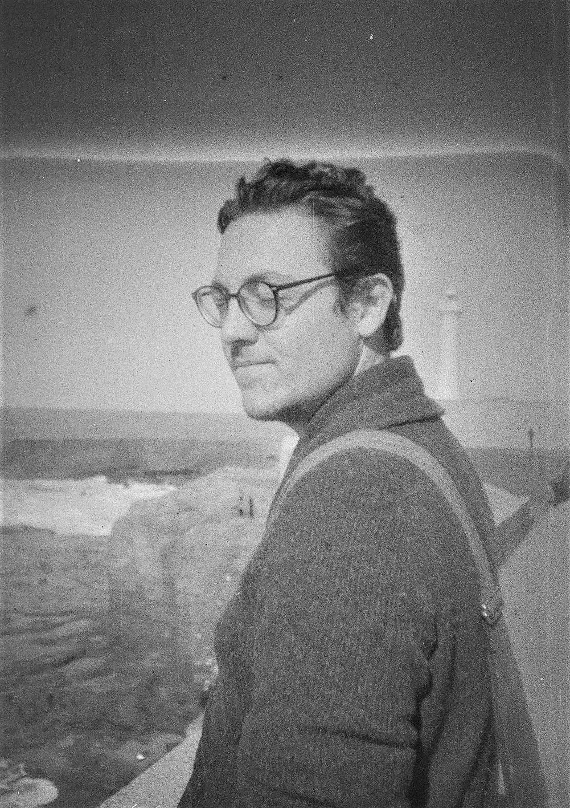

Over a decade of international work sits behind this page. I spent three years with the U.S. Peace Corps in youth development in Morocco, taught English and coached ALC Rabat's debate team to a national title, and spent five years managing grants and MEL frameworks for Tanit Feminist Research Center, coordinating teams across the Netherlands, Morocco, and the United States. I hold an MS in International Relations from the Norwegian University of Life Sciences, where my thesis applied postcolonial and constructivist theory to a case study of U.S. foreign policy in the Western Sahara. I have edited academic manuscripts for peer-reviewed journals and written policy briefs, grant proposals, and donor reports for international NGOs and foundations. I work in English and Moroccan Arabic, and I bring the same discipline to every client and student: precise questions, sound evidence, structured arguments.
